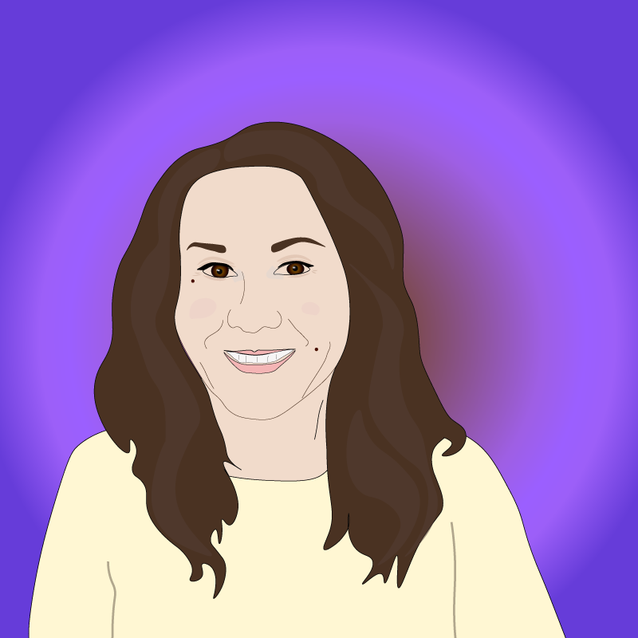

According to the Cambridge dictionary, the definition of “prejudice” is “an unfair and unreasonable opinion or feeling formed without enough thought or knowledge”. Racism, homophobia, nationalism, sexism, and xenophobia all fit that definition. These prejudices impact millions of people every day. Although we live in a postmodern society, the number of racist and xenophobic incidents increase every year, not only in the US, but also in the other countries. For instance, the Russian media reported at least 363 instances of crime against LGBT people from 2011 to 2016 ( a source ). Between 2011 and 2016, homophobes murdered at least 149 people across Russia ( a source ). These are not just numbers; they represent peoples’ lives. In my opinion, almost everyone has prejudices. Some people can change and control them, but other people do not want to acknowledge them, see them as flaws, and try to understand other people. Let me honestly tell you about my prejudice.

My name is Kristina Kniazeva and I was born in a small city in Russia. I did not encounter different nationalities such as American, Cameroonian, Dominican, and Chinese until I moved to the United States in 2016. Of course, I had Azerbaijani, Bashkir, Tatar, and Chuvash friends, but these minorities have always been part of Russian society. My view on foreigners was shaped by Russian media’s negative stance. For example, a Russian comic Mikhail Zadornov states on his TV show that all American people are very stupid, and many people who have never been to the US or people who were born in the USSR believe him. However, the United States is a country that creates new technologies – many of which Russians buy. Finally, when I arrived to New York, I was surprised by the number of different cultures and nationalities around me. Although I have Arabic friends now, I am scared every time I see an Arabic man with a big bag in the subway. I always think he is a terrorist. I do not have the same thoughts about other people in the Subway. I understand that my prejudice came from terrorist attacks around the world. In the same time, I live in Bay Ridge, Brooklyn which often is referred to as “the heart of Brooklyn's Arab community” and I like my neighbors. I recognize my prejudice for what it is – false preconceptions and try to change my opinion about Arabic people and see their personalities above all.
“Once you have dialogue starting, you know you can break down prejudice.” Harvey Milk.